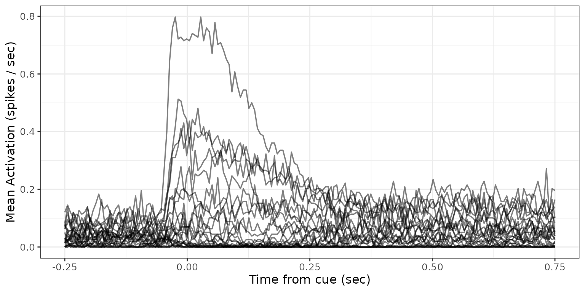
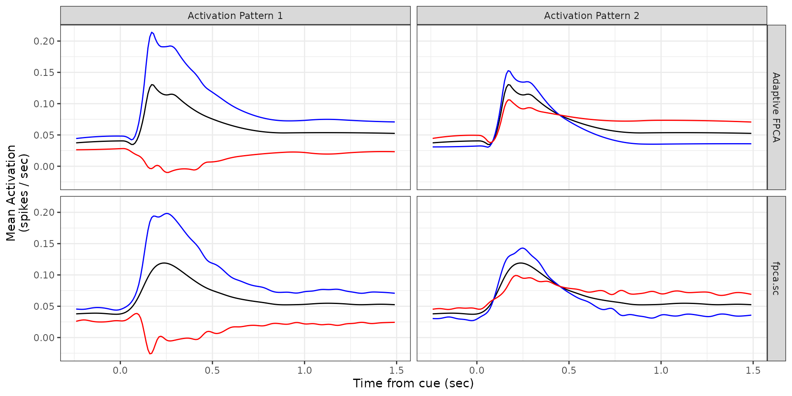
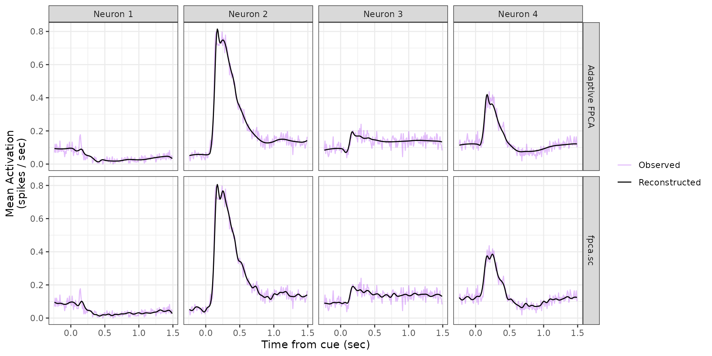

Reproducibility - Real Data Analysis
Source:vignettes/articles/reproducibility_real_data.Rmd
reproducibility_real_data.RmdOverview
This vignette reproduces the real-data analysis from the paper
“Functional Principal Components Analysis with Locally Adaptive
Smoothing” using the afpca package. We apply
Adaptive Functional Principal Components Analysis (Adaptive
FPCA) to trial-averaged neural firing rate data recorded during
a reaching task, and compare the results to the standard
fpca.sc method from the refund package.
Setup
library(afpca)
library(refund)
require(tidyverse)
require(ggplot2)
require(tidyfun)
require(patchwork)
data(firing_rates_data)Data
firing_rates_data contains trial-averaged mean
activation profiles (spikes/sec) for 25 neurons over a 1.74-second
window. Each row is one neuron, and the activation column
stores its firing rate profile as a tfd functional data
object. The time axis is shifted so that
corresponds to cue onset. These are the neuron-level averages displayed
in Panel B1 of Figure 1 in the paper.
firing_rates_data |>
tf_unnest(activation) |>
mutate(activation_arg = activation_arg - 0.25) |>
ggplot(aes(x = activation_arg, y = activation_value, group = neuron_no)) +
geom_line(linewidth = 0.6, alpha = 0.5) +
labs(x = "Time from cue (sec)", y = "Mean Activation (spikes / sec)") +
theme_bw() +
theme(text = element_text(size = 12))
Figure 4
Figure 4 compares Adaptive FPCA against fpca.sc across
two panels:
- Panel A shows the first two estimated FPCs for each model, displayed as the estimated mean function (black) perturbed by the 25th (red) and 75th (blue) percentiles of the corresponding scores.
- Panel B shows observed vs. reconstructed activation profiles for four representative neurons.
Model Fitting
We reshape the functional data into a numeric matrix (neurons × timepoints), fit both models, and flip FPC signs so the dominant pattern reflects increased post-cue activation.
Y.data <- firing_rates_data |>
tf_spread(activation) |>
select(-neuron_no) |>
as.matrix()
# Adaptive FPCA
Fit.Adaptive.FPCA <- fpca.adapt(data = t(Y.data), nbs = 40, n.comp = 15)
Fit.Adaptive.FPCA$fpcs <- Fit.Adaptive.FPCA$fpcs * -1
Fit.Adaptive.FPCA$scores <- Fit.Adaptive.FPCA$scores * -1
# Standard FPCA
Fit.sc <- fpca.sc(Y = Y.data, nbasis = 40)
Fit.sc$efunctions <- Fit.sc$efunctions * -1
Fit.sc$scores <- Fit.sc$scores * -1Panel A: Estimated FPC Patterns
The helper make_fpc_df() builds a tidy data frame for a
single FPC, storing the mean and mean +/- FPC.
time_grid <- 1:174 / 100 - 0.25
make_fpc_df <- function(mu, phi, scores, fpc_no, model) {
data.frame(
Mu = mu,
plus = mu + phi * quantile(scores, 0.75),
minus = mu + phi * quantile(scores, 0.25),
time = time_grid,
fpc_no = fpc_no,
model = model
)
}
fpcs_data <- bind_rows(
make_fpc_df(Fit.Adaptive.FPCA$mean, Fit.Adaptive.FPCA$fpcs[, 1],
Fit.Adaptive.FPCA$scores[, 1], "Activation Pattern 1", "Adaptive FPCA"),
make_fpc_df(Fit.Adaptive.FPCA$mean, Fit.Adaptive.FPCA$fpcs[, 2],
Fit.Adaptive.FPCA$scores[, 2], "Activation Pattern 2", "Adaptive FPCA"),
make_fpc_df(Fit.sc$mu, Fit.sc$efunctions[, 1],
Fit.sc$scores[, 1], "Activation Pattern 1", "fpca.sc"),
make_fpc_df(Fit.sc$mu, Fit.sc$efunctions[, 2],
Fit.sc$scores[, 2], "Activation Pattern 2", "fpca.sc")
)
figure4_panelA <- fpcs_data |>
ggplot(aes(x = time)) +
geom_line(aes(y = Mu), colour = "black") +
geom_line(aes(y = plus), colour = "blue") +
geom_line(aes(y = minus), colour = "red") +
facet_grid(model ~ fpc_no) +
labs(x = "Time from cue (sec)", y = "Mean Activation\n(spikes / sec)") +
theme_bw() +
theme(text = element_text(size = 11))
figure4_panelA
Panel B: Observed vs. Reconstructed
The helper make_neuron_df() pairs observed and
model-reconstructed profiles for a single neuron. We do this for four
representative neurons under each model.
make_neuron_df <- function(idx, label, model_name, observed_mat, fitted_mat) {
data.frame(
observed = observed_mat[, idx],
fitted = fitted_mat[, idx],
time = time_grid,
model = model_name,
neuron = label
)
}
neuron_idx <- c(1, 4, 15, 25)
neuron_labels <- paste("Neuron", 1:4)
neurons_data <- bind_rows(
Map(make_neuron_df, neuron_idx, neuron_labels,
"Adaptive FPCA", list(t(Y.data)), list(Fit.Adaptive.FPCA$Y_hat)),
Map(make_neuron_df, neuron_idx, neuron_labels,
"fpca.sc", list(t(Y.data)), list(t(Fit.sc$Yhat)))
) |> bind_rows()
figure4_panelB <- neurons_data |>
ggplot(aes(x = time)) +
geom_line(aes(y = observed, colour = "Observed"), alpha = 0.3) +
geom_line(aes(y = fitted, colour = "Reconstructed")) +
facet_grid(model ~ neuron) +
labs(x = "Time from cue (sec)", y = "Mean Activation\n(spikes / sec)") +
scale_color_manual(values = c("Observed" = "purple", "Reconstructed" = "black")) +
theme_bw() +
theme(text = element_text(size = 11), legend.title = element_blank())
figure4_panelB